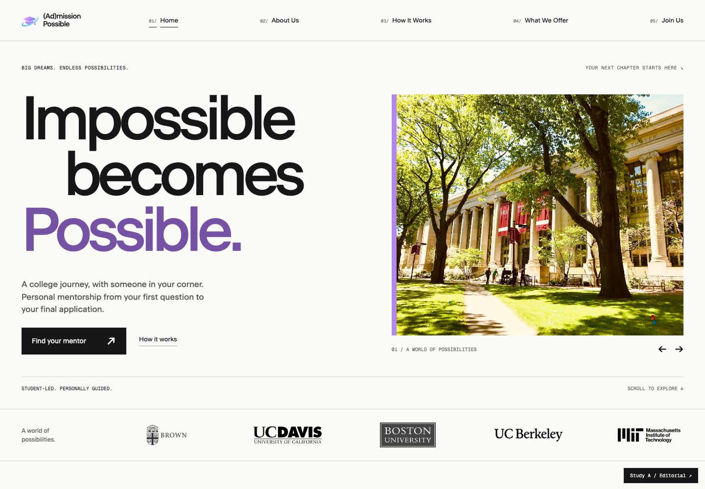
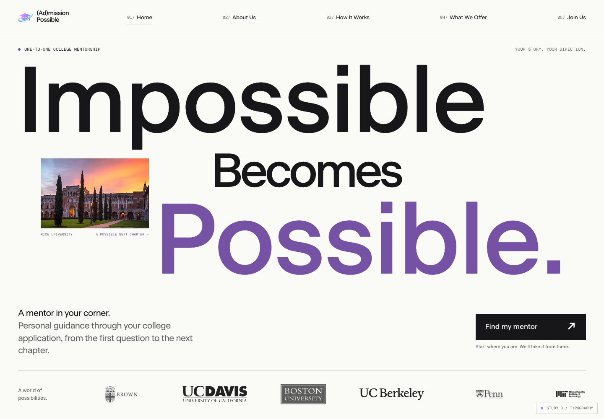
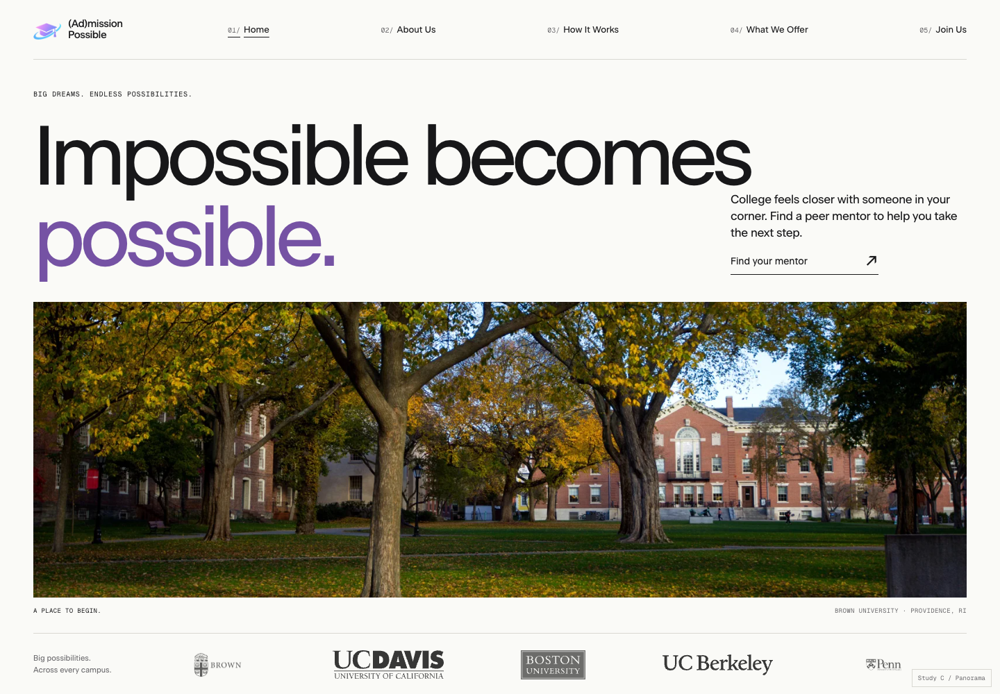

A / The editorial
Oversized staggered type, one deliberate image, and a clear mentorship action. A balanced, confident first impression.
Explore Study A ↗ (AD)MISSION POSSIBLEHERO / DESIGN REVIEW
(AD)MISSION POSSIBLEHERO / DESIGN REVIEW
Same identity. Three distinct first impressions. Each study uses Beausite, the original lavender palette, real campus photography, and the five-section navigation.

Oversized staggered type, one deliberate image, and a clear mentorship action. A balanced, confident first impression.
Explore Study A ↗
Typography leads. A small campus window creates an unexpected pause within a bold, memorable composition.
Explore Study B ↗
A wide photographic frame and generous breathing room. The calmest, most cinematic interpretation.
Explore Study C ↗Now refining: the editorial.The working homepage adds a sliding campus gallery, direct access to the mentorship form, motion controls, and a responsive layout. The original opening animation stays.
Open the working website ↗Selected after browsing Awwwards and the live sites. These are composition references; Admission Possible keeps its own typography, imagery, and identity.
Compact copy, a tall image, and generous negative space. A useful guide for the editorial study’s balance.
Confident oversized typography integrated with imagery. A reference for scale and deliberate alignment.
A huge typographic statement followed by one large media frame. Very few elements carry the whole first impression.
A disciplined split grid and clear separation of message, image, and supporting content.
Generous central space framed by selected image tiles. Demonstrates how imagery can leave the message room to breathe.
One large framed visual with sparse surroundings. A useful reference for photographic restraint.
A single human-focused image and a restrained bottom-left headline. Considered for a future student-led photo direction.
A large typographic statement and expansive space. The scale informs the poster, without adopting its particles or text effects.
Strong single-image art direction and confident type placement. Useful for judging image crops.
Expressive image composition and a large central message. Screened as a more adventurous education example.
One full-screen classroom scene with a short, emotionally clear headline. The human story leads.
Oversized left-aligned typography and generous space. Education content can use a strong editorial hierarchy.
Also reviewed: Brown University, Grids by Obys, and the previous Funny reference. StudioRS, Elena Gonci, Maison des Élites, and Daybreak were screened out for this direction. This is a curated review of relevant examples, not an exhaustive survey of the Awwwards archive. Studies are local design prototypes; their signup links lead to the working site.